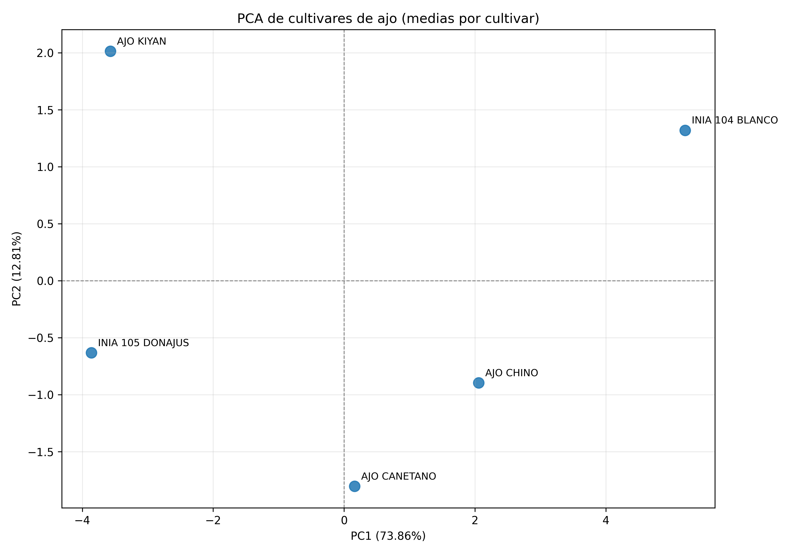
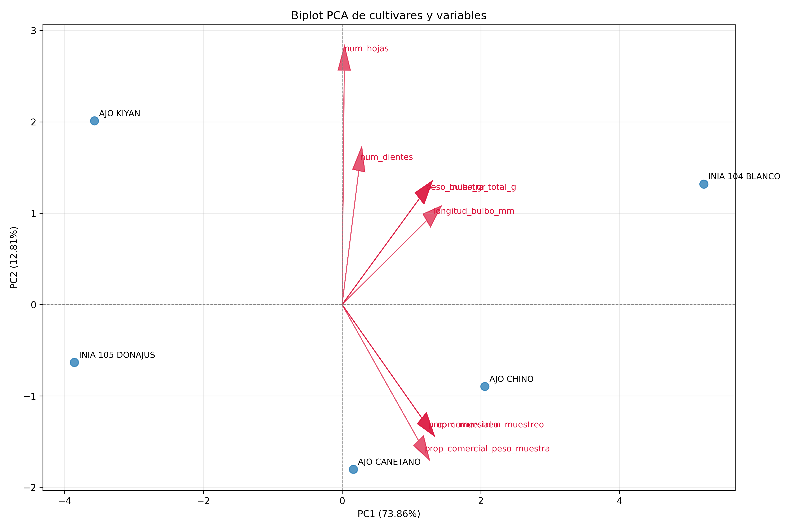
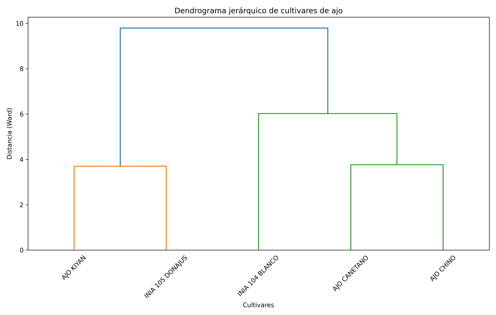
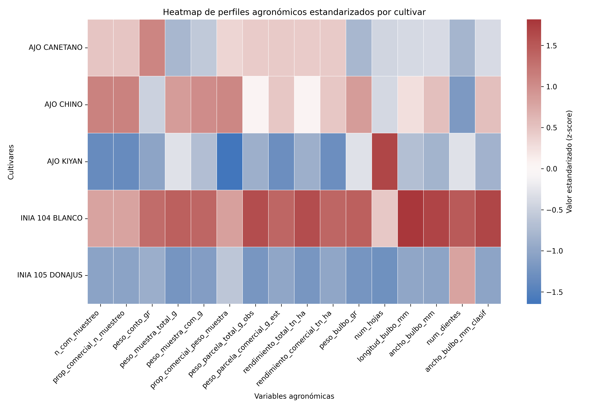

Artículo científico del experimento
Autor: Víctor Ramírez
Afiliación: INIA – Estación Experimental Agraria Vista Florida
Resumen y Abstract
Resumen
El objetivo del estudio fue evaluar la adaptabilidad agronómica inicial de cultivares de ajo en condiciones costeras de Lambayeque, Perú, como base para la selección preliminar de material con potencial para el desarrollo de semilla regional. El ensayo se estableció bajo un diseño de bloques completos al azar y el procesamiento estadístico final se realizó con cinco cultivares, debido a que un tratamiento fue excluido del archivo analítico antes del ANOVA y de los análisis multivariados. Se analizaron variables de rendimiento, calidad comercial y morfología de bulbo mediante estadística descriptiva, análisis de varianza, análisis multivariado y comparaciones múltiples.
Los resultados mostraron diferencias significativas entre cultivares para peso de bulbo, peso de muestra total y comercial, longitud y ancho de bulbo, número de dientes y número de hojas. INIA 104 BLANCO presentó los mayores promedios de peso de bulbo, rendimiento total, rendimiento comercial, longitud de bulbo y ancho de bulbo. El PCA indicó que PC1 y PC2 explicaron 73.86 % y 12.81 % de la variación, respectivamente.
Abstract
The study evaluated the initial agronomic adaptability of garlic cultivars under coastal conditions of Lambayeque, Peru, as a basis for preliminary selection of materials with potential for a regional seed system. Yield, commercial quality, and bulb morphology variables were analyzed using descriptive statistics, ANOVA, Tukey comparisons, and multivariate methods. INIA 104 BLANCO showed the highest mean values in the main productive and commercial traits.
Introducción
El ajo es un cultivo hortícola de importancia económica y alimentaria. En la costa norte del Perú, una limitante importante es el uso predominante de material de siembra no certificado, lo que incrementa la variabilidad del comportamiento agronómico y restringe la estabilidad del rendimiento y la uniformidad comercial. En este contexto, la evaluación de la adaptabilidad varietal es un componente clave para identificar cultivares con mejor desempeño en condiciones específicas y apoyar programas de desarrollo de semilla.
Materiales y métodos
Área de estudio
El experimento se realizó en la región Lambayeque, dentro de un sistema agrícola bajo riego representativo de la zona, correspondiente a la Estación Experimental Agraria Vista Florida del INIA.
Diseño experimental
El ensayo se condujo bajo un diseño de bloques completos al azar, con cuatro bloques y una parcela por cultivar en cada bloque. La parcela constituyó la unidad experimental.
Cultivares analizados
- AJO CANETANO
- AJO CHINO
- AJO KIYAN
- INIA 104 BLANCO
- INIA 105 DONAJUS
Variables evaluadas
- Número de plantas comerciales
- Proporción comercial
- Peso de muestra total y comercial
- Peso total y comercial de parcela
- Rendimiento total y comercial
- Peso de bulbo
- Longitud y ancho de bulbo
- Número de dientes
- Número de hojas
Análisis estadístico
- Descriptivos por cultivar
- ANOVA con tratamiento y bloque
- Comparaciones múltiples de Tukey
- Estandarización z
- PCA
- Clustering jerárquico con Ward
Resultados
Desempeño agronómico por cultivar
INIA 104 BLANCO registró los mayores valores promedio de peso de bulbo, rendimiento total, rendimiento comercial, longitud y ancho de bulbo. AJO CHINO mostró un comportamiento intermedio-alto, mientras que AJO KIYAN e INIA 105 DONAJUS concentraron los menores indicadores de desempeño comercial.
| Cultivar | Peso de bulbo (g) | Rendimiento total (t ha-1) | Rendimiento comercial (t ha-1) | Longitud de bulbo (mm) | Ancho de bulbo (mm) | Número de dientes | Número de hojas |
|---|---|---|---|---|---|---|---|
| AJO CANETANO | 43.03 | 7.99 | 7.66 | 41.75 | 52.49 | 5.30 | 10.90 |
| AJO CHINO | 58.89 | 7.71 | 7.71 | 44.13 | 56.16 | 4.68 | 10.93 |
| AJO KIYAN | 47.68 | 7.04 | 5.78 | 40.68 | 50.64 | 6.23 | 12.85 |
| INIA 104 BLANCO | 64.16 | 8.82 | 8.68 | 49.79 | 60.79 | 9.40 | 11.73 |
| INIA 105 DONAJUS | 38.76 | 6.81 | 6.12 | 39.52 | 49.83 | 8.18 | 10.13 |
Tabla 1. Resumen de variables agronómicas clave por cultivar.
Análisis de varianza
El ANOVA confirmó diferencias significativas entre cultivares para peso de muestra total, peso de muestra comercial, peso de bulbo, número de hojas, longitud y ancho de bulbo, número de dientes y ancho de bulbo clasificado.
| Variable | F | p-valor |
|---|---|---|
| Peso de muestra total (g) | 11.6452 | 0.0004 |
| Peso de muestra comercial (g) | 8.3614 | 0.0018 |
| Peso de bulbo (g) | 11.6452 | 0.0004 |
| Número de hojas | 6.0407 | 0.0067 |
| Longitud de bulbo (mm) | 10.3883 | 0.0007 |
| Ancho de bulbo (mm) | 10.7153 | 0.0006 |
| Número de dientes | 10.3435 | 0.0007 |
| Ancho de bulbo clasificado (mm) | 10.3928 | 0.0007 |
Tabla 2. Variables con diferencias significativas entre cultivares según ANOVA.
Comparaciones múltiples de Tukey
INIA 104 BLANCO conformó el grupo estadísticamente superior para peso de muestra total. AJO CHINO se ubicó en un grupo intermedio-alto, mientras que AJO CANETANO e INIA 105 DONAJUS mostraron el menor desempeño para esta variable.
| Cultivar | Peso de muestra total (g) |
|---|---|
| INIA 104 BLANCO | 641.62 ± 71.16 a |
| AJO CHINO | 588.88 ± 41.85 ab |
| AJO KIYAN | 476.82 ± 64.66 bc |
| AJO CANETANO | 430.25 ± 31.21 c |
| INIA 105 DONAJUS | 387.62 ± 68.08 c |
Tabla 3. Comparación de medias por Tukey.
Análisis de componentes principales y clustering
Los dos primeros componentes principales explicaron 86.67 % de la variación total. PC1 explicó 73.86 % y estuvo dominado por variables asociadas con tamaño de bulbo y productividad; PC2 explicó 12.81 % y estuvo dominado por número de hojas, proporción comercial por peso y número de dientes. El clustering separó tres grupos: INIA 104 BLANCO como grupo independiente, AJO CANETANO y AJO CHINO como grupo intermedio, y AJO KIYAN junto con INIA 105 DONAJUS como grupo de menor desempeño comercial.
Figuras del proyecto




Discusión
La integración del análisis de varianza con herramientas multivariadas permitió identificar patrones consistentes de diferenciación agronómica entre los cultivares evaluados. Las principales fuentes de variación se asociaron con rasgos de tamaño de bulbo y productividad, los cuales son determinantes para la calidad comercial y la selección varietal.
INIA 104 BLANCO destacó de manera consistente en los descriptivos, la prueba de Tukey y el análisis multivariado. En contraste, INIA 105 DONAJUS y AJO KIYAN mostraron los perfiles de menor desempeño comercial relativo. AJO CHINO y AJO CANETANO presentaron perfiles intermedios y podrían considerarse materiales útiles para validaciones posteriores.
Desde una perspectiva aplicada, los resultados constituyen una base técnica para la selección preliminar de materiales en programas de desarrollo de semilla regional de ajo en la costa norte del Perú.
Conclusiones
- Se evidenciaron diferencias agronómicas importantes entre los cultivares de ajo evaluados.
- INIA 104 BLANCO presentó el mejor desempeño integral en peso de bulbo, dimensiones de bulbo y rendimiento.
- El ANOVA confirmó diferencias significativas en variables clave de calidad y productividad.
- El PCA y el clustering permitieron distinguir tres perfiles principales de comportamiento agronómico.
- Los resultados respaldan la combinación de ANOVA y herramientas multivariadas para la selección preliminar de cultivares adaptados a Lambayeque.
TRL y proyección tecnológica
Este experimento forma parte del proceso inicial de construcción de una tecnología regional de semilla de ajo para Lambayeque. Los resultados permiten identificar materiales promisorios y orientar una siguiente etapa de validación multilocal, fortalecimiento del sistema de semilla y futura liberación tecnológica.
En términos prácticos, esta web puede presentarse como una vitrina científica del proyecto: muestra el problema, el enfoque analítico, la evidencia experimental y la ruta de continuidad.
Fase experimental con evidencia comparativa y base para selección preliminar.
Repositorio y trazabilidad
Esta web puede complementarse con imágenes, tablas resumidas y resultados del análisis alojados en tu repositorio:
https://github.com/elviarlo-code/ajo-exp-2025-adaptabilidad-01